IB Docs (2) Team
IB Docs (2) Team

Unit 2.11(3) Market power - Monopoly(HL)
In theory, a monopoly exists when one firm's output accounts for the total market supply of an industry. In reality, there are very few examples of pure monopolies because it is nearly always possible to find competitors supplying substitutes for the good produced by the firm that is considered to be a monopoly.
- Definition of monopoly
- Barriers to entry
- Demand and revenue
- Diagram and explanation of normal profit, abnormal profit and losses
- Natural monopoly
- Efficiency in monopoly
- Evaluation of monopoly
Revision material
 The link to the attached pdf is revision material from Unit 2.11(3) Market power - Monopoly(HL). The revision material can be downloaded as a student handout.
The link to the attached pdf is revision material from Unit 2.11(3) Market power - Monopoly(HL). The revision material can be downloaded as a student handout.
Defining monopoly
In theory, a monopoly exists when one firm's output accounts for the total market supply of an industry. In reality, there are very few examples of pure monopolies because it is nearly always possible to find competitors supplying substitutes for the good produced by the firm that is considered to be a monopoly. Domestic water supply is one market that comes close to the definition of monopoly. There is often a single domestic water supplier in an area and there are no real substitutes for domestic water supply.
Veolia Water is the water division of the French company Veolia Environment and is the world's largest supplier of water services. Its total revenue is $13Bn and it employs 95,000 people. Veolia Water manages the whole water supply process: sourcing from reservoirs and rivers, water treatment and the final distribution of water to the population. Veolia Water is a very big company with 95 million customers. It is the single provider of domestic water in the markets it supplies and it would be described as a natural monopoly because of the high set-up costs and economies of scale associated with the domestic water industry.
Questions
a. Define the term total revenue. [2]
Total revenue is the value of income a business receives from selling its good or service.
b. If Veolia Water's total revenue is $13Billion and it has 95 million customers, calculate its average revenue. [2]
$13,000,000,000 / 95,000,000 = $136.84
c. Outline the high set-up costs Veolia Water encounters when it is setting up production. [2]
To set up production Veolia Water would have to invest in large capital items such as reservoirs, sewage plants, water treatment facilities and extensive pipework. These items would be associated with very high initial costs.
d. Explain how Veolia Water might benefit from technical and financial economies of scale. [4]
- The large-scale capital needed for the provision of domestic water such as pipelines and water treatment plants would give Veolia water technical economies of scale and reduce its long-run average costs.
- As a large business Veolia Water will be able to raise large amounts of funds at low-interest rates from different sources of finance which will give it financial economies of scale and reduce its long-run average costs.
Investigation
Research into another market you think might be a monopoly.
Market definition
Whether a monopoly exists or not depends on how a market is defined. If a narrow definition is used then monopolies are more likely to exist. For example, if there is one cinema in town A then it has a monopoly if the market definition is ‘cinemas in town A’. By broadening the definition to ‘local cinemas consumers could realistically get to from town A’, then competing cinemas located in other towns now exist and the cinema's monopoly power is reduced. If the market is broadened again to ‘local entertainment in town A’ (sports clubs, restaurants, bars, theatres, etc) there are even more substitutes for town A's cinema and its monopoly power is further reduced.
Dominant producer monopoly
Many countries consider firms whose total revenue accounts for a high proportion of total market revenue as having monopoly power. For example, Facebook's market share of the social media market is 74 per cent which gives the business significant monopoly power.
Barriers to entry exist
Monopolies exist because of barriers to entry that prevent new firms from entering a market to compete with the existing firm. A barrier to entry is a restriction and/or cost of setting up in a market that is over and above the normal cost and or restrictions of entering a market. Setting up a local grocery shop, for example, would mean renting premises, fitting out the premises, buying stock, hiring staff and acquiring a trading license. These would be the normal set-up costs and regulations a new grocery shop would expect to face when entering a market encounter. Any extra cost or regulation such as a license that is difficult to acquire would be a barrier to entry.
Examples of barriers to entry:
- Control over resources - When one business owns the land needed to access the resources needed for production. For example, the De Beers diamond mining business owns a high proportion of the land needed to access the world’s diamonds.
- Legal restrictions and patents - Where a firm owns a patent or copyright which prevents other firms from using their technology and production system. Pharmaceutical companies often own patents on a drug that prevents other businesses from copying it and entering the market.
- Technical barriers – When one firm’s product becomes established amongst consumers and is it technically difficult for them to switch to new suppliers. Microsoft's Windows operating system accounts for 80 per cent of the world’s computer operating systems mainly because buyers want to use software that will easily run on one operating platform.
- Brand loyalty – Once a firm establishes a brand in a market it can develop brand loyalty that makes it difficult for new entrants to compete against. The power of the Apple brand name makes it very difficult for new firms to enter the smartphone and tablet markets against the iPhone and Ipad.
- Advertising and promotion expenditure – Where an existing firm spends large amounts of money on advertising and promotion it is difficult for a new entrant to get their brand known and established. Coca-Cola spent over $4 billion on promoting its products last year which any new entrant would struggle to compete with.
- Economies of scale – A problem for any new small firm entering a market is matching the cost structure of a large existing producer in the market that is benefiting from significant economies of scale. The retailer Walmart has such significant buying power it can achieve very low unit costs allowing it to set a price new entrants will struggle to compete with.
- Fixed costs or set-up costs – The cost of setting up production in some industries is so high that entrants are unable to enter the market because they do not have the finance to pay for the capital needed to start production. This is particularly true in the energy market. It is estimated that the Hinkley Point nuclear power station in the UK would cost $25 billion to set up.
Getting through the barriers to entry that Google and Meta have created to protect their market is bewildering for any new entrant. Meta’s personalised advertising settings and Google’s data-led search algorithm make their markets almost impregnable. Add to that the sheer power of their brand names and you can understand why they accounted for 80% of all digital advertising expenditure in the EU last year. When was the last time you did anything other than ‘Google it’!
Without competition in the market businesses that use Google and Meta have to pay more for advertising with these two giants. Higher advertising costs find their way through to more expensive products that you and I have to buy. You also worry about the social reach and influence of these Google and Facebook.
 Worksheet questions
Worksheet questions
Question
Explain three barriers to entry that have given Meta and Google monopoly power in the information technology market. [10]
The answer might include:
- Definitions of barriers to entry and monopoly power.

- A diagram that shows economies of scale by using the LRATC curve can act as a barrier entry. The diagram opposite shows this.
- An explanation that once Google and Meta have reached a certain scale of output they achieve economies of scale that would make it difficult for any new entrant to their respective markets. For example, technical and financial economies.
- An explanation that Google and Meta both have very strong brand names that make it difficult for new entrants to compete with.
- An explanation of the technical barriers that Facebook and Meta establish in their respective markets This means users become locked in' to using their technology and would find it difficult to switch to a new entrant.
- An explanation that the money Google and Meta have to spend on advertising and promotion would be difficult for any new business to match so they can become established in the IT market.
*Any three explanations can be used and other barriers could be explained.
Investigation
Research into the implications of monopoly power of Meta.
Demand and revenue in monopoly
The demand curve
Where an industry is dominated by a monopoly producer the firm is considered to be a price maker because there is no competition in the market. The barriers to entry the monopoly producer benefits from mean there are few close substitutes for the monopoly producer's product. This means the demand curve the monopoly firm faces is downward sloping. The demand curve is equal to average revenue, but the marginal revenue curve separates from the demand curve. With a downward sloping demand curve, the marginal revenue is twice as steep and becomes negative on the price inelastic section of the demand curve. This is shown in diagram 2.65. The table sets out price and revenue data for a monopoly producer in the domestic water market.
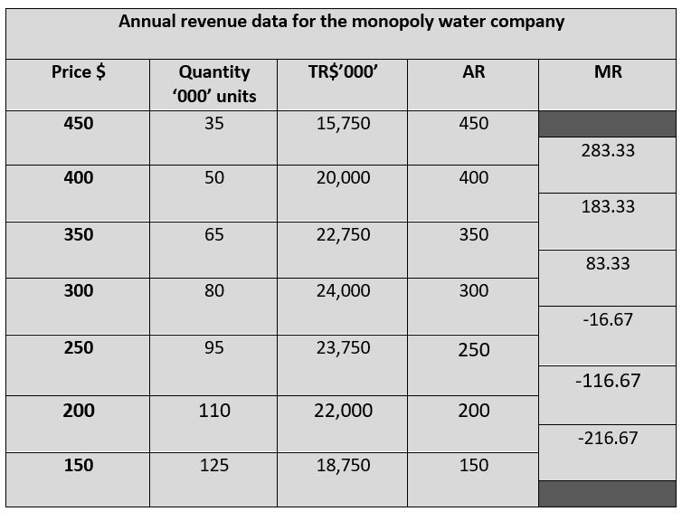
Profit maximisation
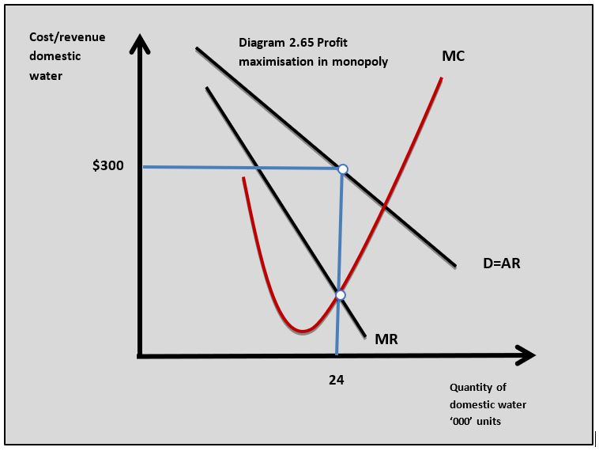
Monopoly firms aim to profit maximise by producing where marginal cost equals marginal revenue when marginal cost is rising. At the profit maximising output, the monopolist sets a price based on the demand curve at that level of output. The profit maximising output for the monopoly water business is shown in diagram 2.65. The profit maximising output occurs where marginal revenue is positive which means the monopoly firm produces on the elastic portion of the demand curve.
Profits and Losses
Normal profit
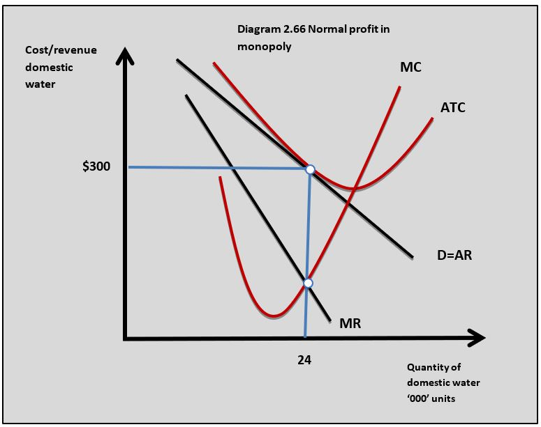
When a monopoly producer earns normal profit it produces where total revenue equals total cost or average revenue equals average total cost at the profit maximising output. This is the minimum level of profit the firm needs to achieve to maintain its operations in the market.Abnormal profits
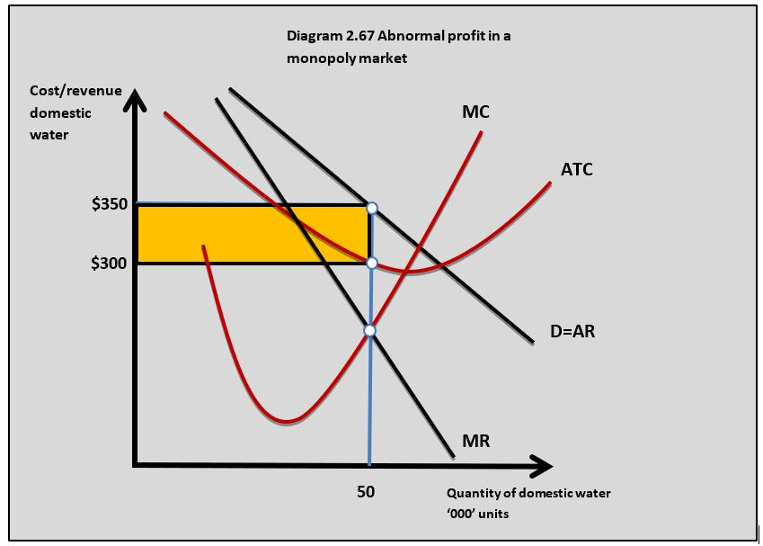
A monopoly firm earns abnormal profits when total revenue is greater than total cost. This can be calculated in the diagrams as:
(AR – ATC) x Q
In the diagram this can be calculated as:
($350 - $300) x 50,000 = $2,500,000 abnormal profit
When the monopolist is making abnormal profit the entrepreneur(s) who own the business are earning more profit than the minimum they need to keep producing in the market. This is shown in diagram 2.67.
The barriers to entry that exist in a monopoly market mean the monopolist can earn abnormal profit in the long run because new firms cannot enter the market. For example, the abnormal profit earned in the domestic water market would be attractive to new entrants but they cannot enter the market because of the high fixed costs associated with setting up production.
Losses
Mon
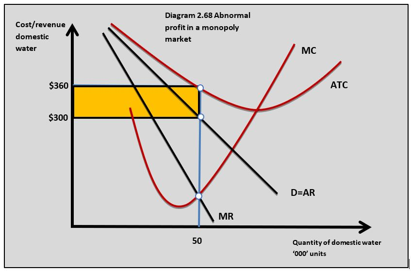
opoly firms can make losses when the total cost is greater than total revenue. This might occur in a market if there is a fall in market demand or a rise in production costs. Losses can be calculated in the diagrams as:(ATC – AR) x Q
($360 - $300) x 50,000 = $3,000,000 loss
A loss can be sustained by the monopolist in the short run, but in long run, it will need to shut down unless it can either reduce its costs or increase revenues. For example, the water company might decrease its costs by reducing labour and other operating costs.
The world eyewear market is dominated by the Italian-based multinational, Luxottica. This is an Italian eyewear conglomerate and the world's largest company in the eyewear industry. Luxottica is a big company that accounts for around 25% of the world’s eyewear market which gives it considerable monopoly power. The business’ total revenue last year was nearly $9.5Billion and it employs 80,000 people globally.
Luxottica is a vertically integrated business that designs, manufactures, distributes and retails eyewear throughout the world. The company sells its products under iconic brand names such as Ray-Ban, Vogue and Oakley. Luxottica also manufactures glasses for other leading designer brand names such as Giorgio Armani, Prada and Burberry.
The data in the table is an example of the type of cost and revenue situation Luxottica might face if it was producing and selling sunglasses in the market of a small country.
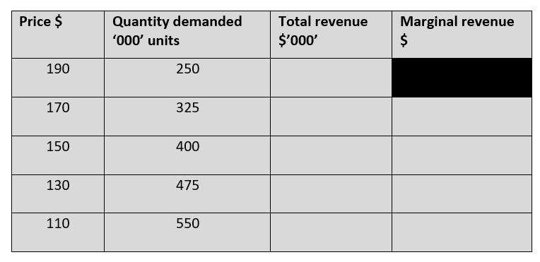
Worksheet questions
Questions
a. Outline how the strength of Luxottica’s brand names creates a barrier to entry to the eyewear market. [2]
Luxottica brand names such as Ray-Ban and Oakley are so well known and established in the sunglasses market that it makes it difficult for a new firm to enter the market and attract brand loyal consumers to compete with Luxottica.
b. Using the data in the table calculate the following:
(i) Total revenue at each price. [2]
(ii) Marginal revenue at each price. [2]
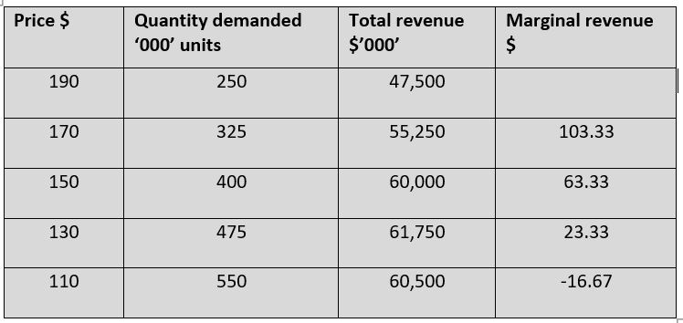
b. The following additional data is available on the sunglasses Luxottica is selling:
- Profit maximising output for the sunglasses is at 475,000 units
- Average total cost at 475,000 units is $116
(i) State the marginal cost value at the output of 475,000 units. [2]
MC = MR
$23.33 = $23.33 at 475,000 units
MC = $23.33
(ii) Calculate the profit at 475,000 units. [2]
$61,750,000 - (475,000 x $116) = $6,650,000 profit
(iii) Explain why Luxottica will be able to sustain this profit in the long run. [4]
As a producer with monopoly power, Luxottica's market position is protected by barriers to entry such as the band loyalty it attracts. The $6,650,000 profit it earns in this example is abnormal profit because total revenue is greater than total cost which in a perfectly competitive market would attract new firms into the industry. The barriers to entry mean Luxottica can maintain its abnormal profit in the long run.
Investigation
Research into the eyewear market and find out the strength of Luxottica's market position.
Natural monopoly
A natural monopoly is a market that will tend to exist as a monopoly because once one firm establishes itself in the industry it is difficult for new firms to enter the market to compete with the existing producer. This can be because of:
- Significant economies of scale in the industry
- Very high fixed costs or set up costs
- The market is only large enough to support one producer
The economies of scale in a natural monopoly situation are so significant that the long-run average costs curve reaches its minimum level at a very high level of output. This means that once one firm is established in the market it will have achieved such low average total costs it will be very difficult for a new firm to enter and compete with the established producer. This often occurs in so-called ‘utilities’ such as gas, electricity and water.
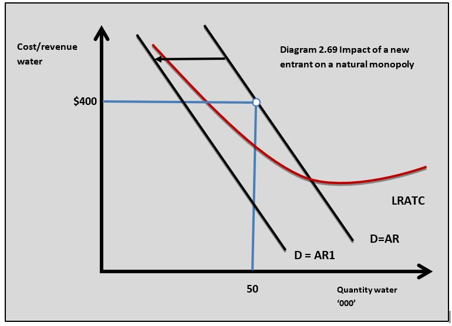
Diagram 2.69 shows the domestic water market as a monopoly with firm A the single producer in the market. The profit maximising price is set at $400 per year with 50,000 customers and the firm will make an abnormal profit because the average revenue is greater than the long-run average cost at that output. If new firm B enters the domestic water market then the market demand would be divided between firm A and firm B. The demand curve for firm A would shift to the left and would now be at D = AR1 and firm A would now be making losses. If firm B has similar costs it will also be making losses. In the end, only one firm will be able to make enough profit to maintain its position in the market and it will be a monopoly.
Efficiency in monopoly
Productive efficiency
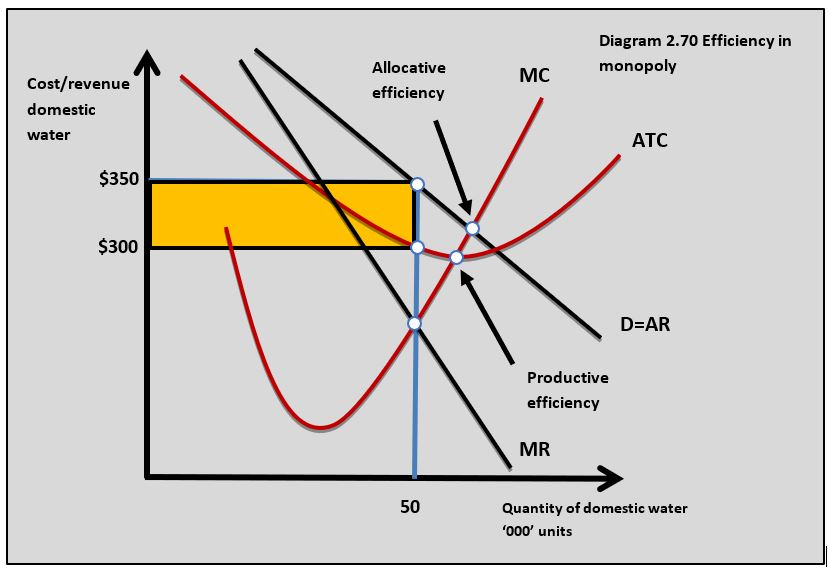
Basic theory suggests monopolists will not achieve productive efficiency because they produce on the downward-sloping portion of the ATC curve and do not achieve the lowest possible average total cost. This is shown in diagram 2.70.
Some economists argue that on a practical level the lack of competition means monopoly firms do not have the incentive to produce efficiently. However, it can be argued the size of monopolists means the economies of scale they benefit from make their average total costs lower than firms in a more competitive market.
Allocative efficiency
Economic theory says a
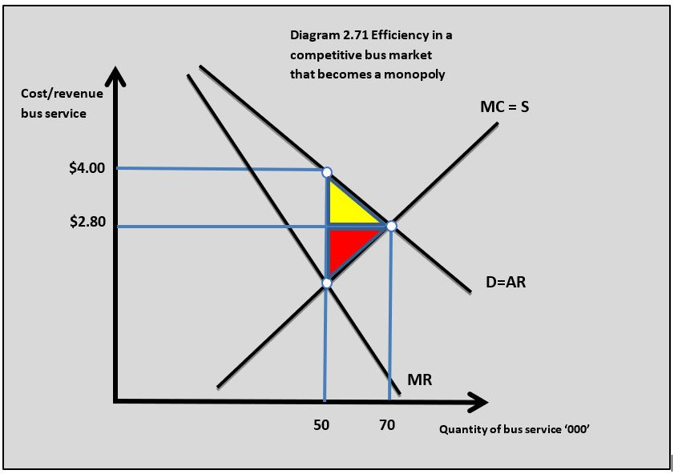
monopoly is not allocatively efficient because the monopolist restricts output to force up prices and increase profits. Consider an example where a competitive bus market is taken over by one firm to form a monopoly:- A local bus service is made up of a large number of small bus companies and the market price is $2.80 with 70,000 journeys made per week.
- The market is taken over by a single monopoly producer who buys up all the small bus companies.
- As a result of this, the output falls to the monopoly producer's profit maximising output at 50,000 journeys per week at $4.
- The market is no longer allocatively efficient because the price is greater than the marginal cost.
- The consumer and producer surplus in the bus market both decrease.
- The yellow shaded area is the loss of consumer surplus which is not gained by the monopoly producer and is called the consumer deadweight loss.
- The red shaded area is the loss of producer surplus when the small bus companies left the market and are not gained by the monopoly business and are the producer deadweight loss.
- Adding together the consumer deadweight loss and producer deadweight loss gives us the welfare loss associated with the market becoming a monopoly.
Can a monopoly be more efficient than a perfectly competitive market?
Economies of scale
Because monopolies are often large firms they tend to benefit from economies of scale which allow them to produce at a higher output and a lower price than firms in perfect competition. In our bus example, the monopolist that buys up all the small bus companies in a town will be able to reduce its unit costs because it can buy fuel, buses and spare parts in bulk; organise bus timetables centrally using better technology than smaller companies, and operate larger buses spreading the cost of the driver across more passengers.
Innovation
Because monopolies can sustain abnormal profits in the long run it has the incentive and the resources to invest in new and better products and systems. In a competitive market, the abnormal profits are competed away by new entrants so the incentive to innovate is reduced. The abnormal profit also provides the funds needed to develop new products and systems. This benefit lies behind patent and copyright laws which provide firms with effective monopolies to aid innovation.
This was hard on individuals requiring treatment and on healthcare providers because it increased the annual cost of treatment for some patients to hundreds of thousands of dollars a year. Martin Shkreli was quoted as saying ‘If you have a drug that is $100 for one course of therapy, and you know that you can charge $100,000, what should shareholders think when you say, 'I'd rather not take the heat'?

Questions
a. Outline how patents are an example of a barrier to entry. [2]
Patents are a barrier to entry because they legally prevent a potential firm from entering a market and producing the same or similar product to the existing firm in the market that owns the patent.
b. Using a diagram, explain how the patent Turing Pharmaceuticals owns on the drug Daraprim enables it to make an abnormal profit. [4]
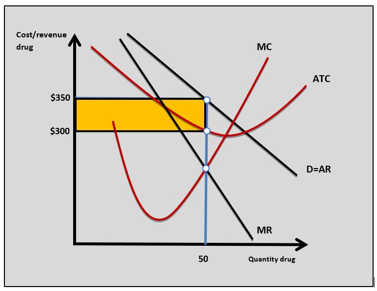
The patent Turing Pharmaceuticals has on the drug Daraprim acts as a barrier to entry to the market for a drug to deal with toxoplasmosis. The necessity nature of Daraprim means the demand for it is inelastic and Turing can increase the drug's price to earn abnormal profit which it can sustain in the long run because of the patent as a barrier to entry.c. Using a real-world example, evaluate the view that a monopoly in the healthcare drug market will always be bad for consumers. [15]
Answers might include:
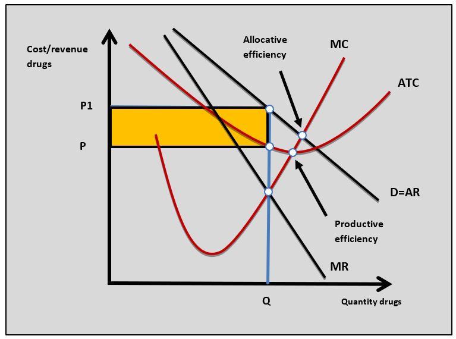
- Definitions of monopoly, productive efficiency and allocative efficiency.
- A diagram to show how a monopoly fails to achieve productive and allocative efficiency. The diagram opposite shows how productive and allocative efficiency is not achieved in the drugs market.
- An explanation that the monopolist in the drug market fails to achieve productive efficiency because it does not produce where ATC = MC. This results in higher costs of production and may mean a higher price for the consumer.
- An explanation that the monopolist in the drug market does not achieve allocative efficiency because it sets a price that is higher than the marginal cost. This means the price is higher and output lower than in a perfectly competitive market.
- An explanation that the consumer in the drug market pays a higher price for a restricted choice and loss of consumer surplus. There is also a welfare loss of consumer surplus.
- A real-world example, of how a monopoly market is bad for the consumer such as Turing Pharmaceuticals' monopoly supply of Daraprim.
- Evaluation might include a discussion of the benefits for the consumer in the drug market when it is a monopoly such as economies of scale that can lead to lower units costs and prices for the consumer; the ability of producers to retain abnormal profits means there are more funds for investment into R&D for new drugs, and the abnormal profit a monopolist earns can be used to fund investment into new drugs.
Investigation
Do some research into drug patents and monopolies. Is the Daraprim example a case for strict government regulation of this market?
Monopoly regulation
Governments frequently step into markets that could become or are already monopolies to reduce the market failure associated with monopoly market conditions. By intervening in these markets the government aims to:
- Move the industry closer to productive and allocative efficiency
- Reduce prices to the consumer and increase choice
- Reduce the deadweight loss of consumer and producer surplus associated with monopoly.
Methods of intervention
Governments have several policy methods they can use to reduce the market failure associated with monopolies and monopoly market power.
Preventing monopolies
Governments often use a regulatory body to assess situations where mergers and acquisitions in markets might lead to a monopoly situation. For example, in 2019 the merger between the UK supermarket groups ASDA and Sainburys was prevented from happening by the competition authorities because it was thought the merger would increase prices and reduce consumer choice.
Anti-competitive practices
Governments can also use a regulatory body to look at markets where firms might be exploiting their monopoly power. A group of firms might, for example, agree to fix prices above the equilibrium level to exploit the consumer.
Regulation
Regulation particularly applies to natural monopolies where a single firm will dominate market output. Many former state-run public utilities like electricity, gas and water companies have monopoly positions and they are regulated to prevent them from acting in a way that exploits the consumer. For example, a water company might not be able to increase its prices each year by more than a certain percentage.
State ownership
In many economies, the government can take a company that has a natural monopoly position into state ownership. As a state-run organisation, the firm can set objectives that meet the needs of society instead of achieving profit maximisation. For example, the French state-run rail service, SNCF can work to maximise the welfare of different stakeholders of the organisation rather than just maximise profits.
Taxation
When monopolies earn abnormal profits the state can tax those profits and redistribute them throughout society. Many politicians and economists argue that Facebook, Apple and Amazon earn high profits because of the monopoly market power they have and a tax related to this could be redistributed throughout society.
Evaluation of monopoly regulation
- Cost of intervention - Governments have to pay for the regulatory process used to regulate monopolies and this will be an opportunity cost in terms of other expenditure objectives.
- Management - Large, well-resourced businesses can avoid or find their way around the regulations put in place by the government. For example, some businesses can move their assets and operations to another country.
- Industry costs - Monopoly regulations can push up business costs leading to higher prices for consumers. Increased regulation and taxation might reduce the amount of money firms have to invest in the industry and fund innovation.
- Political factors - When the government gets involved in markets it often makes political decisions that are not necessarily the best outcome for the stakeholders in the market. A state-run railway, for example, may have pressure on it not to use labour-saving new technology because it leads to job losses even though it would improve the quality of the service. It can also be the case that an industry in public ownership is managed and run inefficiently because of government bureaucracy.
The merger of Comcast and Time Warner would have created a $45 billion company. These are the two largest cable businesses in the US. The two firms combined would have 30 million customers across the US which would give them a third of the national market for customers who pay for TV.
Time Warner and Comcast are also the two largest broadband Internet providers in the US. The merger would significantly reduce consumer choice in the market where people only have one or two options in their area for cable and Internet. There could also be an increase in monthly subscription rates.
The merger was looked at carefully by the Department of Justice in the US who decided it was against the public interest and the two companies called off the deal.
Questions
a. Explain why governments might intervene in a market dominated by a monopoly. [10]
Answers might include:
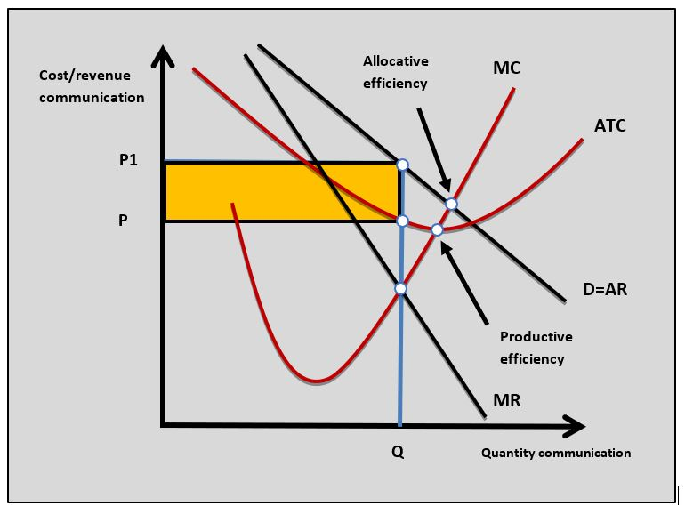
- Definition of monopoly, productive efficiency and allocative efficiency.
- A diagram to show how a monopoly market does not achieve productive or allocative efficiency as a reason for government intervention.
- An explanation that the reason for government intervention in a monopoly market is because the firm fails to achieve productive efficiency because it does not produce where ATC = MC. This results in higher costs of production and may mean a higher price for the consumer.
- An explanation that the reason for government intervention in a monopoly market is because the monopoly firm fails to achieve allocative efficiency because it sets a price that is higher than the marginal cost. This means the price is higher and output lower than in a perfectly competitive market.
- An explanation that the reason for government intervention in a monopoly market is because consumers in a monopoly market pay a higher price for a restricted choice and there is a loss of consumer surplus. There is also a welfare loss of consumer surplus.
- Example of a market that might need regulation such as the communications market.
b. Using a real-world example, evaluate three policies a government might use to intervene in a market dominated by a monopoly. [15]
Answers should include:
- Definition of monopoly.
- A diagram to show the reasons for government intervention in a market to improve efficiency. *It is possible to answer this question by referring to the diagram in part a.
- An explanation that state ownership of a monopoly can improve efficiency if a state-managed organisation can set market price and output where MC = P or MC = ATC.
- An explanation that the government could intervene in a monopoly market by taxing the firm's abnormal market to redistribute it for public spending.
- An explanation that the government could set up a regulatory framework to make the monopoly firm set price and output where P = MC.
- An explanation that the government could set laws and regulations to prevent monopolies occurring or a monopoly operating in an anti-competitive way.
- Examples of governments intervening in monopoly markets such as the US government preventing the Comcast, Time Warner merger.
- Evaluation might include discussion of the problems of the methods of intervention in monopoly markets such as the cost of taking a large business into public ownership; regulation and tax that reduces monopoly profits might reduce long-term investment by the monopoly; monopoly markets might find their way around regulations, and forcing a state-managed monopoly firm to set P = MC might lead to losses which have to be paid for by the taxpayer.
Investigation
Investigate another merger or takeover in a market and how the government approached it.
Which of the following market characteristics is the most likely to lead to a monopoly?
Patents act as a barrier to entry to create a monopoly.
The following data is available for a monopolist firm, which of the following is the abnormal profit?
Output = 20,000 units
AR =
TVC
AFC
Which of the following explains why monopoly firms can earn abnormal profit in the long run?
Barriers to entry prevent new firms from entering the market to compete the abnormal profit away.
Which of the following is unlikely to be a characteristic of a natural monopoly?
Natural monopoly has high set-up costs.
Which of the following is least likely to occur when a competitive market is taken over by a monopoly firm?
Monopoly firms decrease output to increase profits.
Which of the following is a possible benefit for a market from being dominated by a monopoly producer?
Monopoly producers can earn abnormal profits in the long run which can be re-invested by the monopoly firm.
Which of the following is most likely to be a problem of a government regulating a monopoly producer?
If government regulation reduces profits this might lead to less investment in the industry.
Using the monopoly diagram, which of the following is true?
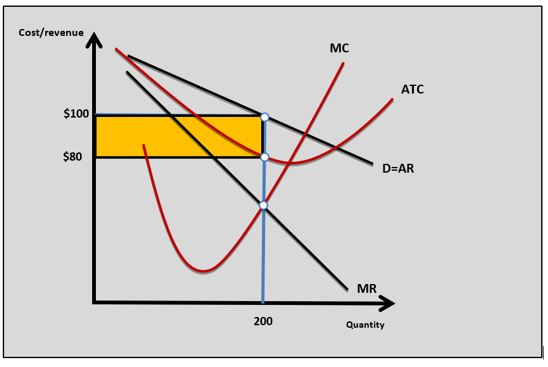
At the profit maximising output AR > MR.
The following data is available for the monopoly producer:
- Selling price
$ 40 - Average variable cost
$ 20 - Fixed cost
$ 75 million - Output 2.5 million units
- Marginal cost
$ 15 - Marginal revenue
$ 15
Which of the following is true?
Which of the following set of characteristics is most likely to lead to a monopoly in a market?
 Twitter
Twitter
 Facebook
Facebook
 LinkedIn
LinkedIn